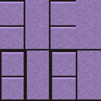

Home › Village and crafting › Rituals
Rituals
Ritualists write ritual seals at the  scribe desk. Anyone can use a finished seal; only someone who knows the school at the seal's rank can write it.
scribe desk. Anyone can use a finished seal; only someone who knows the school at the seal's rank can write it.
Ritualists write ritual seals at the scribe desk in five schools (Augmentation, Deception, Restoration, Travel, Warding); anyone can use a finished seal. Augmentations are permanent body changes, up to three per person.
Learning rituals
The Rituals tree (open to every ninja) has one technique per school: Augmentation, Deception, Restoration, Travel and Warding. Each rank you learn (C, B, A, S) lets you write that rank's seals. The same tree holds the ritualist perks:
- Enduring Ritualist (B): timed rituals last 50% longer. Persistent Ritual (A): twice as long.
- Quicken Ritual (B): seals are written 50% faster.
- Experienced Ritualist (C): a 25% chance a seal isn't used up.
- Share Ritual (B): a blessing on an ally also touches the nearest other ally within 3 cells.
- Ritual Specialization (B): ritual healing and resistance-breaking are 25% stronger.
- Expansive Ritual (B): area rituals cover 50% more ground.
- Ritual Knowledge (B): your curses last twice as long.
Costs: C seals take cloth and silver; B adds gold; A adds a spirit gem; S needs three spirit gems and gold.
Augmentation
Permanent body changes, used on a person (up to three per person): claws, fangs, scaly skin, thin or thick fur, expanded or filtered lungs, sleepless, enhanced metabolism, armour plates, thick hide, living furnace, pervasive hearing, exoskeleton, skeletal reinforcement, massive claw, photosynthetic, prehensile tail, very thick hide, extra arms, healing touch and adaptive body.  Augmentation expulsion (A) removes all augmentations and curses.
Augmentation expulsion (A) removes all augmentations and curses.
Curses (C, five days, on enemies and prisoners): brittle bones, lethargy, thin skin, combat fear and festering sores.
Deception
 Soothing calm: ends a mental break at once.
Soothing calm: ends a mental break at once. Wisp lights,
Wisp lights,  miasma of shadows and
miasma of shadows and 
hallucinatory wall (thrown): lights, a cloud of shadow, an illusory wall that blocks sight but not movement. Poker face,
Poker face,  glib limerick: better bargaining and social impact for a day.
glib limerick: better bargaining and social impact for a day. Grim interrogator: breaks down a prisoner's resistance.
Grim interrogator: breaks down a prisoner's resistance. Lap of luxury: a good mood for a day.
Lap of luxury: a good mood for a day. Camouflage and
Camouflage and  vanish (B): invisibility for a while.
vanish (B): invisibility for a while. Memory rewrite (B): erases someone's worst bad memory.
Memory rewrite (B): erases someone's worst bad memory. Phase shift (B): half damage for a short while.
Phase shift (B): half damage for a short while. Curse: nightmares (A),
Curse: nightmares (A),  extend lifespan (S): five years younger.
extend lifespan (S): five years younger.
Restoration
Cleansing, cure disease, comrades' succor (heals everyone near), remove affliction, restore senses, transfer vitality, borrowed vigour, lasting rest (preserves a corpse), field of victory, moonlight vigor (a full night's rest),  heal (A, about 80 points), fantastic recuperation,
heal (A, about 80 points), fantastic recuperation,  contingent recovery (heals once when the bearer goes down), soul guard,
contingent recovery (heals once when the bearer goes down), soul guard,  cure blight (S),
cure blight (S),  call the departed (S) and
call the departed (S) and  restore youth (S, ten years).
restore youth (S, ten years).
Travel
 Flicker and
Flicker and  jaunt (thrown): carry the thrower to where the seal lands.
jaunt (thrown): carry the thrower to where the seal lands. Companion summon and
Companion summon and  summon friend: pull one of your animals or people on the map to your side.
summon friend: pull one of your animals or people on the map to your side. Wagon's burden,
Wagon's burden,  feet of cloudrunner,
feet of cloudrunner,  cheetah's pursuit: carrying capacity and speed.
cheetah's pursuit: carrying capacity and speed. Transit circle (B): place two or more; right-click one with a colonist to step through to another.
Transit circle (B): place two or more; right-click one with a colonist to step through to another. Swift mark (S): a marker stone you place; a
Swift mark (S): a marker stone you place; a  swift mark recall seal flashes its user to the nearest mark.
swift mark recall seal flashes its user to the nearest mark.
Warding
 Warding sigil (B): a floor glyph that stuns enemies who come near and raises the alarm.
Warding sigil (B): a floor glyph that stuns enemies who come near and raises the alarm.